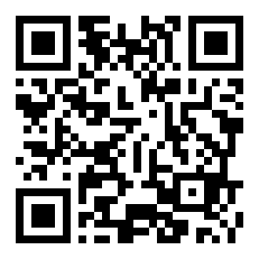

رترو کافه در نسیمشهر، خیابان اصلی، جنب درمانگاه قائم است و هر روز از ۱۰ صبح تا ۱۰ شب باز است. منوی دیجیتال کافه را با اسکن کد QR روی همین پوستر ببینید؛ برای دیدن منو لازم نیست چیزی نصب کنید. کافی است دوربین گوشی را باز کنید، روی کد بگیرید و منو فوری بالا میآید. در منوی رترو کافه ۵۱ آیتم هست: نوشیدنی گرم، دمنوش، نوشیدنی سرد، اسموتی، شربت، شیک، غذا و قلیان. قیمتها همان قیمتهای منوی کافه است.
نوشیدنیهای گرم با اسپرسو شروع میشود. اسپرسو دوبل ۱۱۵، آمریکانو ۱۲۵، کاپوچینو ۱۹۹، لاته ۱۹۹، موکا ۲۲۵، کارامل ماکیاتو ۲۲۵ و هات چاکلت ۲۰۰. چایها هم در همین بخش منو هستند: چای سیاه ۷۵، چای سبز ۱۷۵، چای مراکشی ۱۶۵، چای ترش ۱۷۵ و چای ماسالا ۲۰۰. دمنوشهای کافه چهار تا هستند: دمنوش گل گاوزبان ۱۷۵، دمنوش آرامجان ۱۷۵، دمنوش بهلیمو ۱۷۵ و دمنوش سیب به دارچین ۱۷۵.
نوشیدنیهای سرد برای روزهای گرم مناسباند. آیس آمریکانو ۱۲۵، آیس لاته ۲۰۵، آیس کارامل ۲۲۵، آیس موکا ۲۲۵، آفوگاتو ۱۹۰، لیموناد ۱۸۰، موهیتو ۱۹۰، پیناکولادا ۲۴۵ و آمازون ۲۰۵. اسموتیها دو تا هستند: اسموتی هندوانه ۱۴۵ و اسموتی طالبی ۱۷۵. شربتهای سنتی کافه هم چهار طعم دارند: شربت بیدمشک ۱۴۵، شربت زعفران ۱۸۰، شربت نعنا ۱۶۵ و شربت بهارنارنج ۱۶۵.
شیکهای رترو کافه شش طعم دارند: شیک وانیل ۲۴۵، شیک شکلات ۲۶۵، شیک توتفرنگی ۲۶۵، شیک نوتلا ۳۰۰، شیک اسپرسو ۳۰۰ و شیک بادامزمینی ۳۰۰.
غذاهای کافه شامل این آیتمهاست: سیبزمینی ساده ۲۱۵، سیب آلفردو ۳۸۵، سیب ویژه ۴۳۵، سالاد سزار ۴۶۰، پاستا آلفردو ۴۹۰، پاستا پستو ۵۷۵، برگر ویژه رترو ۵۹۰، پنیری مرغ گریل ۵۴۵ و پنیری مرغ پستو ۵۸۰.
قلیانهای کافه پنج طعم دارند: قلیان دو سیب ۲۶۵، قلیان لاو ۲۶۵، قلیان مسکو ۲۶۵، قلیان آدامس دارچین ۲۶۵ و قلیان سیب یخ ۲۶۵.
نشانی کافه: نسیمشهر، خیابان اصلی، جنب درمانگاه قائم. ساعت کاری: هر روز ۱۰ صبح تا ۱۰ شب. تلفن کافه: ۰۹۳۶۹۱۹۲۲۹۷. اینستاگرام کافه: Caferetro_ir. برای دیدن عکس غذاها و سفارش، منوی کامل رترو کافه را در همین سایت ببینید. نوشیدنیهای گرم و دمنوشها و غذاها و برگر ویژه هم در منوی کامل هستند.